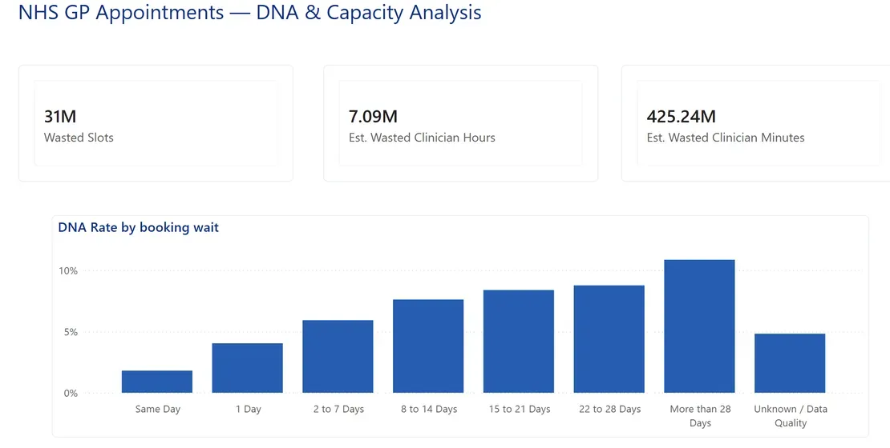

NHS GP Appointments — DNA & Capacity
Power BI · DAXA Power BI dashboard treating GP no-shows as a capacity problem rather than a statistic: a star schema, custom DAX measures, and a three-page build on NHS England's published appointments data (743M appointments, Jan 2020 – Jun 2022).
- 31M slots lost to no-shows — about 7.1M clinician hours
- DNA rate rises ~6x with booking wait (1.8% same-day → 10.8% at 28+ days)
- custom NHS-branded theme, star schema, SUMX/RELATED time estimates